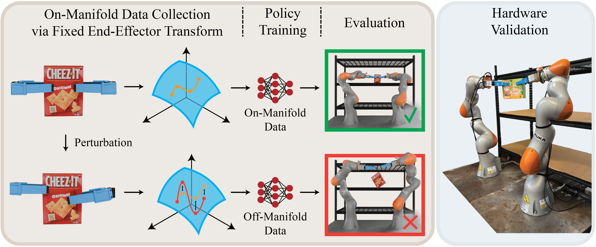

We collect teleoperation data for a constrained bimanual pick-and-place task. Then, we perturb these demonstrations to generate three additional datasets that still accomplish the task, but contain increasing constraint violation. We train a policy on each of these datasets and analyze task success and constraint adherence. Lastly, we collect demonstrations for the same task on hardware, train a policy, and evaluate its performance on similar metrics.
Diffusion policies have shown impressive results in robot imitation learning, even for tasks that require satisfaction of kinematic equality constraints. However, task performance alone is not a reliable indicator of the policy's ability to precisely learn constraints in the training data. To investigate, we analyze how well diffusion policies discover these manifolds with a case study on a bimanual pick-and-place task that encourages fulfillment of a kinematic constraint for success. We study how three factors affect trained policies: dataset size, dataset quality, and manifold curvature. Our experiments show diffusion policies learn a coarse approximation of the constraint manifold with learning affected negatively by decreases in both dataset size and quality. On the other hand, the curvature of the constraint manifold showed inconclusive correlations with both constraint satisfaction and task success. A hardware evaluation verifies the applicability of our results in the real world.